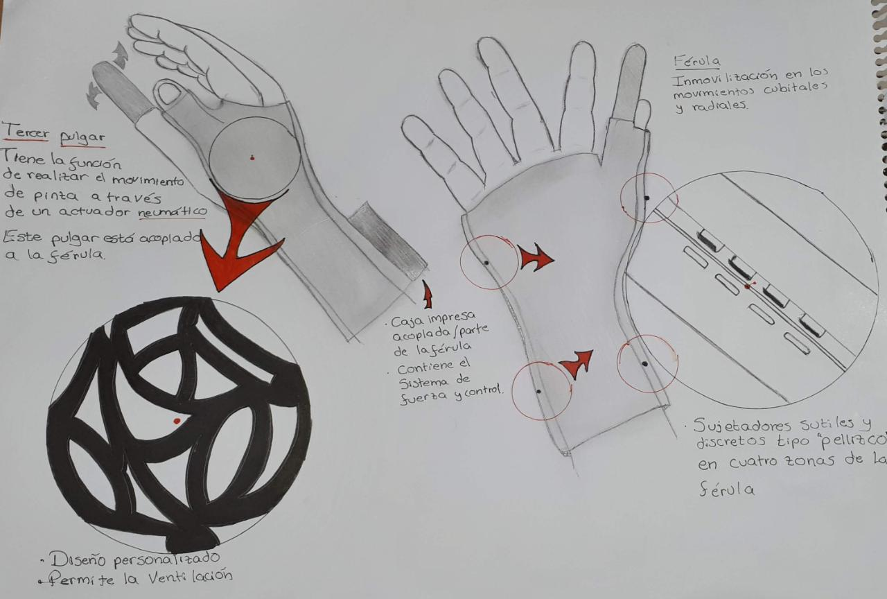
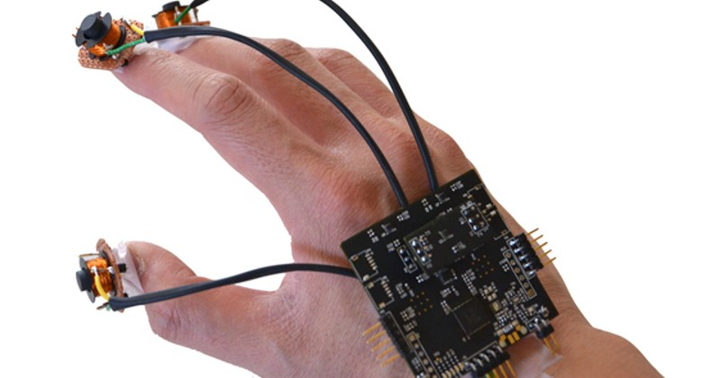

TALLER DE PROYECTOS
PRESENTACIÓN DE TRES ESTRATEGIAS DE SOLUCIÓN
LLUVIA DE IDEAS
- Tijera automática
- Pulgar auxiliar
- Guante pinza
- Tijera automática
- Férula dinámica con magneto
PROPUESTAS
TIJERAS + PULGAR AUXILIAR
La tijera proporcionará apoyo y fuerza para el corte del pollo y el pulgar auxiliar el cual reemplazará los movimientos del pulgar.
DISPOSITIVO EN FORMA DE PINZA
El cual a la hora de presionar tenga el uso similar a la de una pinza de cangrejo, posibilitando el corte y flexible con accionamiento en los dedos índice y medio, en el cual se coloquen dos filos metálicos en donde pueda permitir el corte del pollo.

FÉRULA DINÁMICA CON ELECTROIMÁN
Ubicado en la zona metacarpofalángica del pulgar, el cual atraerá a la tijera por un campo eléctrico inducido.
SELECCIÓN DE LA IDEA
Se eligió aquella solución que cumplía con más requerimientos técnicos: el pulgar auxiliar. Debido a que esta solución no es solo factible para el tratamiento de la enfermedad sino también para la prevención de un nuevo episodio; además, el bajo costo y fácil uso son factores importantes que argumentaron a favor de esta idea. Después de esta, hay 2 más que cumplen con los requerimientos técnicos establecidos: dispositivo en forma de pinza y el guante. Sin embargo, la primera tiene más puntos a favor que estas dos.